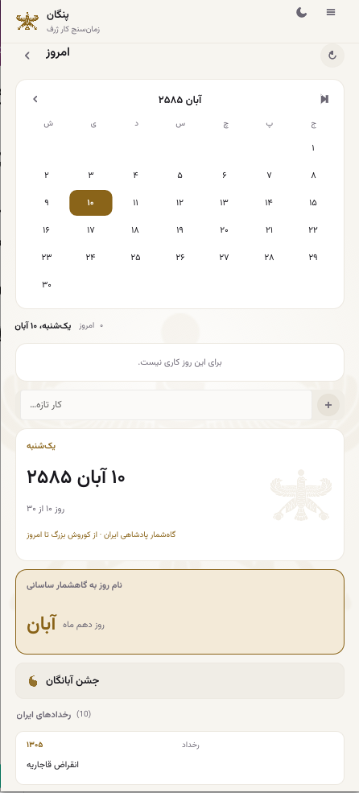
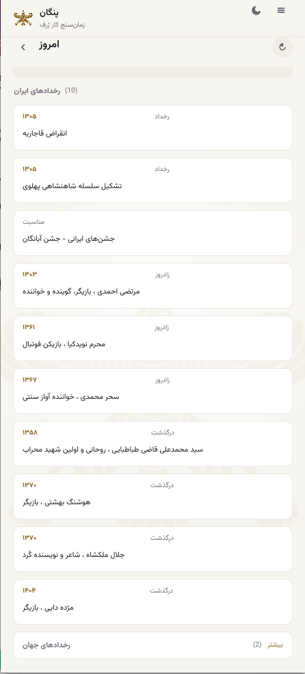

One app, three reckonings
Time is cultural. Pangan's calendar view can run on any of three calendars — and your tasks, plans, and journal stay anchored to the same real days no matter which one you're looking at.
Jalali (Persian)
The host calendar of Pangan: Iranian month names, era reckoning, and the Persian year. This is the default.
Gregorian
The proleptic Gregorian calendar — January to December, with leap-year handling — for those who plan in the common calendar.
Hijri (Islamic)
The arithmetic (tabular) Islamic calendar, in English or Persian month names, for dates in the Hijri year.
The Persian calendar, in depth
Beyond the month grid, Pangan's Jalali view carries Iranian historical events, Sasanian day names, and today's festival — Nowruz, the six Gahambars, fire and water feasts, and the twelve name-days.


Tasks live on real days
Switching calendars never moves your data. Each day in any reckoning maps to the same physical day, so a task planned on a Gregorian date appears on the matching Jalali date — and vice versa. The plan is the plan, whatever the label.